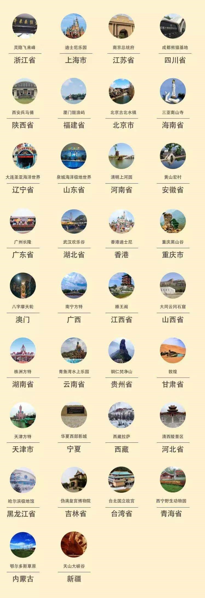

一、项目组成员：
小组成员：大数据174陈秀娟，大数据174马永婵
指导老师：刘兰华
二、项目背景：
如下图，从最近一个月卖出的门票数据可以看到，杭州的灵隐飞来峰、上海迪士尼是最热门的景点。另外还有香 港迪士尼、广州长隆、故宫博物院、珠海长隆、九华山、上海野生动物园、东方明珠、乌镇等。希望大家可以合理 安排出行，以免出现我在景区看人，景区里的人在挤人的情况。
总体来说，级别越高，景区门票的价格就越高。不过，A级和AA级的 平均价格差不多，都在71元左右。AAA级景区的门票平均价格最低，这个值得我们去思考是什么原因。4A景区门票均价在80元，5A景区门票均价在122元， 比4A的价格高出了整整42元！
推荐系数和评分成正比，和销量、价格成反比，所以我们设计了一个最简单的算法：
瞎推荐系数=评分/(销量价格) * 1000 来看看这个简易的推荐算法从国内外数据分析得出的结果。
节假日各种景点人山人海，到底应该去哪个地方玩儿，哪里才能玩得尽兴？哪些城市 哪些景点最火？各个省份都有哪些好评又热门的景点？哪些景点打折力度大？基于爬取的 飞猪网54675条全国景点门票数据，通过分析找答案！
三、项目流程及结果展示：
1.我们都希望自己在有限的时间里面可以获得不同的旅游体验。景点越多的地方，当然旅游选
择就越多，可以获得的体验就更具选择性。我们首先筛选出了全国旅游选择最多的12个城市，如下图：
2.看来三亚是目前某猪上最火的旅游城市了，接着是杭州、北京、桂林、上海等。广州、厦门和 香港等老牌旅游城市分别排名6、7、9。我们印象中的网红城市成都和重庆排名10和11。 我们以省份为单位， 计算了每个省份能搜索到的的景点门票项数，可以看到，旅游选择最多的省份主要集中在沿海，包括广东、 浙江、江苏、山东、福建、广西等。相反，内陆地区的省份旅游选择较少。
3.当然，旅游选择数量多少只能作为其中一个维度给我们提供参考。我们更感兴趣的是，哪些城市最 受游客欢迎呢？这里我们通过两个指标来确定，一是城市最近一个月售出门票数量，二是城市景点的平均分。 我们首先画出了最近一个月售出门票数量Top10的城市，如下图，可见杭州和上海遥遥领先。说明这两个城市一 定有很吸引人并且很火爆的旅游景点。
4.我们接着把平均评分最高的20个城市挑了出来，如下图，字体越大，平均评分越高。可以发现， 游客们对武汉、澳门、海口、杭州、常州、苏州等城市旅游景点的口碑很不错。在两个指标中都出现的城市有： 杭州、北京、香港、无锡、常州、苏州、南京等，很多都集中在长三角一带。
5.接下来是我们最关心的问题，哪些景点是最热门的呢？一方面大家可以去人气景点旅游打卡，另一 方面，如果不是很喜欢凑热闹的话，可以提前避免去这些景点经历人挤人的状况。
如下图，从最近一个月卖出的门票数据可以看到，杭州的灵隐飞来峰、上海迪士尼是最热门的景点。另外还有香 港迪士尼、广州长隆、故宫博物院、珠海长隆、九华山、上海野生动物园、东方明珠、乌镇等。希望大家可以合理 安排出行，以免出现我在景区看人，景区里的人在挤人的情况。
6.那各省份有没有备受好评又热门的景点呢？我们把这些景点门票数据以省级行政区为单位，筛选出 了每个省级行政区最受好评且销量最高的景点，看下图。

7.有最受好评的景点门票，相应就有最不受好评的景点门票。我们挑选出了一些虽然热门但是评分不太高的， 希望可以帮助大家避开雷（但是由于数据是特定的景点门票数据，所以结果仅供参考，具体还是以自己旅行体验为准哦）。8.对于我们这种月光族来说，门票是否打折很大程度上会影响购买决策。为此，我们计算了一下每个景点门票的打折状况。 先来看一看所有景点门票打折状况分布图。可以看到，绝大多数景点门票折扣都在8折到无折扣。不过，最低折扣的景点门票竟然能打到2.7折。
9.现在的旅游景区分为A、AA、AAA、4A、5A这五个级别，到底这个分级有什么区别呢，这五个级别的景区门票价格有什么不一样？是否级别越高， 门票就越高呢？我们按照景区的级别计算出了同一级别各景区门票的平均价格。
总体来说，级别越高，景区门票的价格就越高。不过，A级和AA级的 平均价格差不多，都在71元左右。AAA级景区的门票平均价格最低，这个值得我们去思考是什么原因。4A景区门票均价在80元，5A景区门票均价在122元， 比4A的价格高出了整整42元！
10. 看了这么多，是不是选择变得更多了？是否有的同学对于去哪儿玩更加下不去决定了？我们认为是：高评分、销量少、价格便宜。
推荐系数和评分成正比，和销量、价格成反比，所以我们设计了一个最简单的算法：
瞎推荐系数=评分/(销量价格) * 1000 来看看这个简易的推荐算法从国内外数据分析得出的结果。
可以看到在这个瞎推荐TOP20中国外景点很多（尤其是日本），确实国内到国庆了哪里其实人都是挺多的！